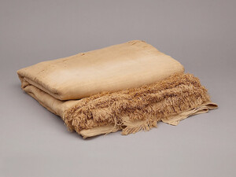

ϣⲛⲥ SA, ϣⲉ. B nn m, linen of fine flax: Ex 26 31 SB, Pro 29 40 SA, Ez 27 7 SB pl, Lu 16 19 SB βύσσος, Is 3 23 pl SB, Ap 19 14 pl SB βύσσινος; P 44 58 S, K 121 B حرير; BMis 10 S ϩⲟⲓⲧⲉ ⲛϫⲏϭⲉ ϩⲓϣ., Mor 43 251 S ⲡϣ. ⲉⲧⲥⲁϩⲧ ⲉⲡⲛⲟⲩⲃ (cf Is l c B), R 1 3 51 S ϩⲉⲛϣ. ⲙⲛϩⲉⲛⲃⲩⲥⲥⲓⲛⲟⲛ as shroud, Aeg 55 B sim; as adj: Ge 41 42 SB βύσσινος; 2 Kg 13 18 S ⲛⲙⲟⲩⲛⲅ ⲛϣ. καρπωτός (cf 19 ⲛⲓⲉⲡⲥⲁ κ.); BMar 80 S ϩⲟⲓⲧⲉ ⲛϣ., El 92 A ϩⲃⲁⲥ ⲛϣ. = ib 122 S, Mor 44 40 S ⲉⲣϣⲱⲛ ⲛϣ., BSM 83 B ⲙⲁⲡⲡⲁ ⲛϣ. ⲉⲧⲥⲟⲧⲡ = BMis 174 S ⲛⲓⲉⲡⲛⲟⲩⲃ, Aeg 27 B ⲙⲁⲡⲡⲁ ⲛϣ. ⲛⲟⲗⲟⲥⲓⲣⲓⲕⲟⲛ.
(noun male)
clothes
linen of fine flax [βυσσος]
as adj [βυσσινος]
as adj [βυσσινος]

complete
572a
See also:
| view | ⲉⲓⲁⲁⲩ S ⲉⲓⲱ, ⲓⲱ S ⲓⲁⲩ B | (noun male) linen [λινον, λινους]746 |
| view | ϭⲁϭⲓⲧⲱⲛ, ϭⲁϭⲓⲧⲱⲛⲉ S ϫⲁϫⲓⲑⲱⲗ B | (noun male/female) coarse linen, tow [στιππυον]
garment thereof S2659 |
| view | ϣⲛⲧⲱ SO ϣⲉⲛⲧⲱ B | (noun female) sheet, robe of linen [σινδων, οθονιον]1937 |